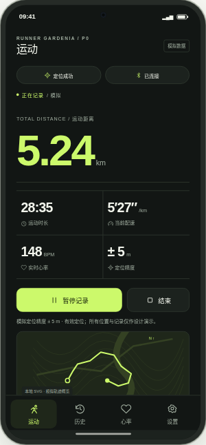
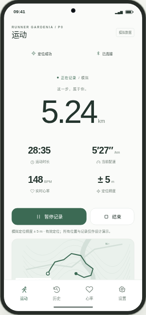
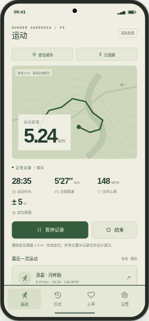
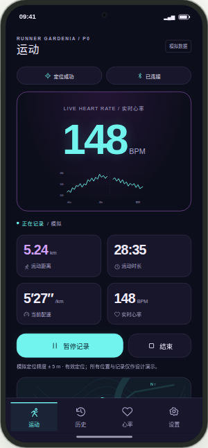
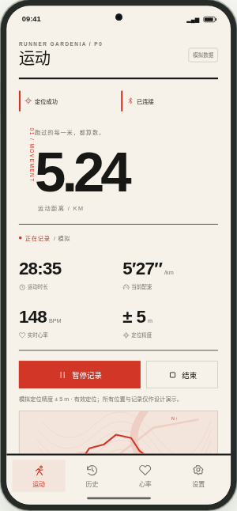
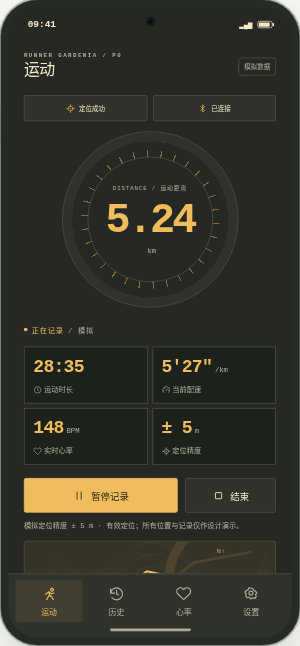
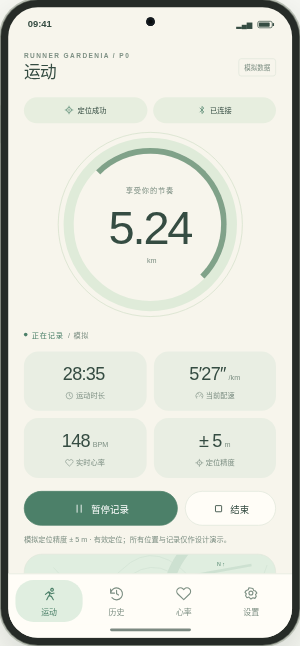
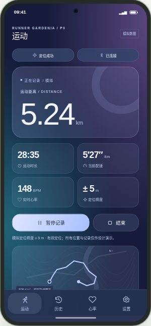
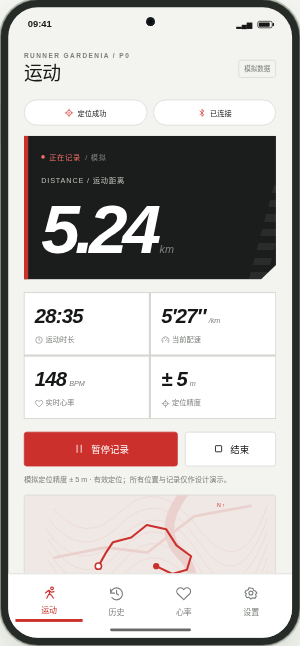
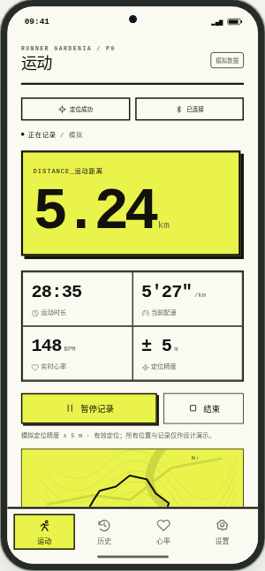

十套实际预览 · Runner Gardenia

01 · Precision Pro专业运动仪表

02 · Quiet Minimal极简系统风格

03 · Outdoor Explorer户外探险风格

04 · Neon Pulse科技霓虹风格

05 · Swiss Editorial瑞士编辑设计

06 · Industrial Gauge工业仪表风格

07 · Calm Wellness柔和健康风格

08 · Aurora Glass现代玻璃科技

09 · Racing Performance赛车竞速风格

10 · Data Brutalism数据粗野主义